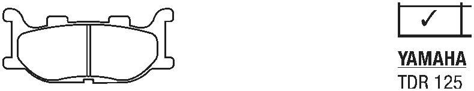

Specifications
General Specifications
Displacement1100 cc
Model Years2000–2006
Service Data
Front Brake PadsEBC FA199 · SBS 691HS

FA19994 × 40.5 × 10 mmRear Brake PadsEBC FA88 · SBS 555LS FA8863.5 × 55 × 9 mm
FA8863.5 × 55 × 9 mm
FA8863.5 × 55 × 9 mmEBC shape badges show the actual pad diagram, code and published dimensions. Diagrams reproduced with written permission from EBC.
Frequently Asked Questions
What is the engine displacement of the Yamaha XVS 1100 V-Star Classic?
The Yamaha XVS 1100 V-Star Classic is listed with a 1100 cc engine.
What brake pads does the XVS 1100 V-Star Classic use?
Front: EBC FA199 · SBS 691HS. Rear: EBC FA88 · SBS 555LS. These are pad-shape references; confirm the compound and exact model year before ordering.
Specifications are manufacturer-claimed and can vary by model year and market. Confirm service limits and torque values against the owner's or workshop manual. Data updated 2026-11-22.